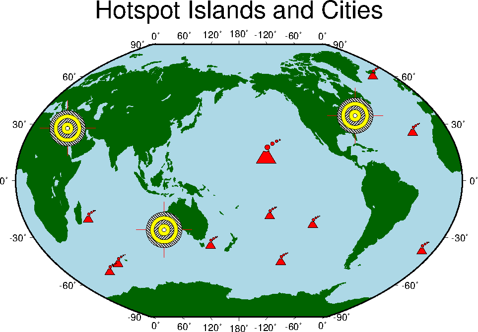

Example 20. It is fairly straightforward for the non-programmer to
extend the capabilities of GMT. Here we illustrate how one may go
about introducing two new symbols for psxy, in this case a volcano
symbol and a bulls-eye.
 View GMT script.
View GMT script.
 Download zipped PostScript file.
Download zipped PostScript file.
 Back
Back